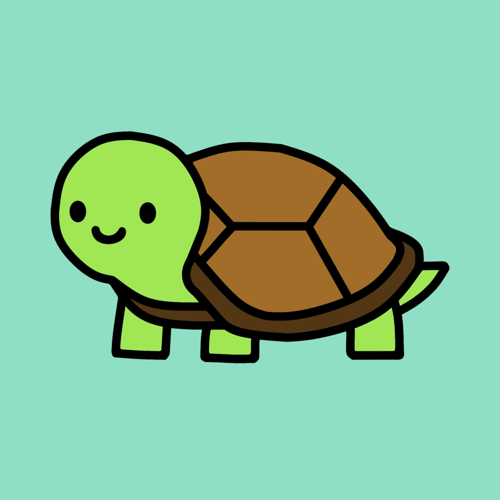

hadrianlau.com
Hello!!! I'm
Hadrian
Showing computers who’s the boss (they’re beefing with me daily)

Email
LeetCode
GitHub
HC Slack
LinkedIn
About Me
Love
Building
,
Exploring
,
Customizing
,
Learning
, and
Solving Problems
.
Software Engineering
,
Computer Science
, and
Math
is definitely my thing.
Currently
Learning Web Dev
,
Organizing
Scrapyard HK
, and
Starting a Hack Club
.
Daily drive Arch Linux with Hyprland on my laptop.
Check out
my dotfiles!
Hobbies: sim racing, Formula One, and cooking (and eating of course)!
udontur is the turtle mascot! udon(food) + tur(turtle)
Choose
My Portfolio
The Playground